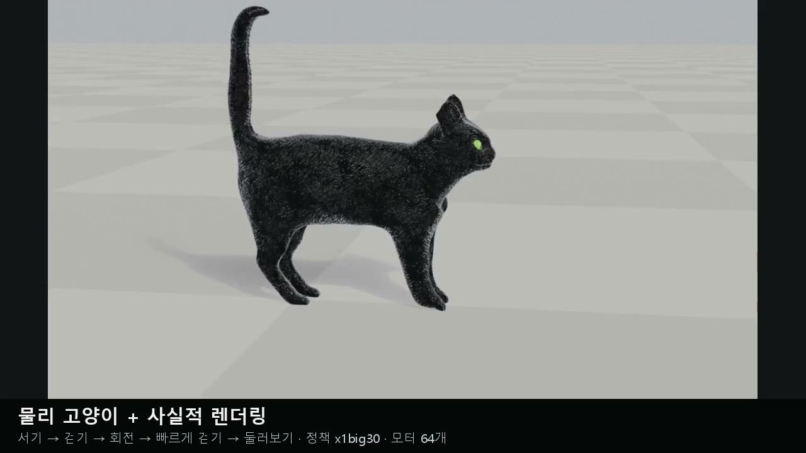
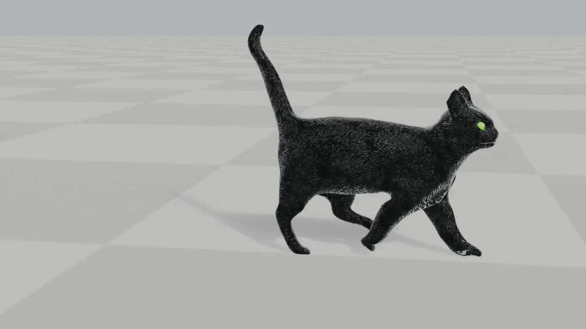
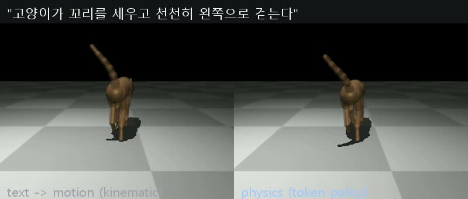
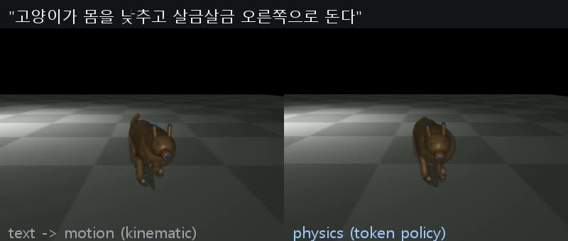
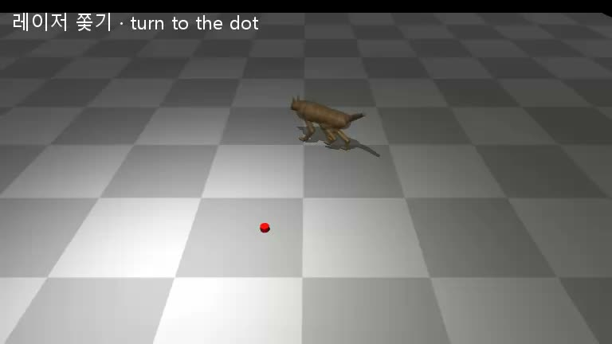
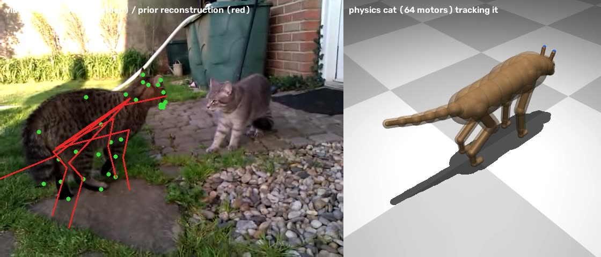
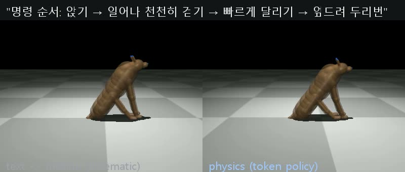
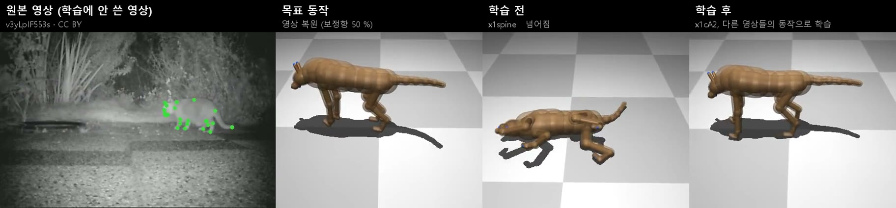

2026년 11월 · 진행 중
고양이 영상에서 동작을 뽑아 3D로 옮기고, 그 동작을 물리 시뮬레이션 속 고양이가 실제로 해내게 만드는 게 목표다. 애니메이션처럼 관절 각도를 그냥 재생하는 게 아니라, 모터 64개를 가진 몸이 중력과 마찰 속에서 넘어지지 않고 움직여야 한다. 지금까지 만든 것을 2분 정도로 묶으면 아래 영상이다.

MuJoCo로 고양이 몸을 만들었다. 척추, 목, 꼬리, 네 다리를 합쳐 관절 모터가 64개다. 동작은 걷기, 빠르게 걷기, 회전, 앉기, 엎드리기, 웅크리기, 둘러보기 같은 기본 동작을 섞어 1,606개 클립으로 만들었고, 정책 하나가 이 클립들을 모두 따라 하도록 PPO로 학습했다. GPU에서 환경 4,096개를 동시에 돌렸다.
학습에 안 쓴 300개 동작으로 평가하면 96 %를 넘어지지 않고 끝까지 따라 한다. 처음에는 잘 걷는 것처럼 보여도 자세히 보면 발이 미끄러지거나 머리가 떨리는 경우가 많아서, 발 미끄러짐과 머리 흔들림에 벌점을 주고 손으로 영상을 보며 판정하는 과정을 여러 번 거쳤다.
시뮬레이션 속 몸은 캡슐 덩어리라 고양이처럼 보이지 않는다. 공개된 고양이 3D 모델(CC BY)을 물리 몸에 입혔다. 처음에는 메시의 점을 가장 가까운 몸 부위에 그대로 붙였더니, 모델과 물리 몸의 비율이 달라서 걸을 때 옆구리가 찢어지고 다리가 뻣뻣했다. 모델 안쪽에 물리 몸의 관절 위치를 새로 잡고 회전만 옮기는 방식으로 바꾼 뒤, 옆구리 주름은 Delta Mush로 펴고 발이 바닥에 붙도록 보정했다.

"꼬리를 세우고 천천히 왼쪽으로 걷는다" 같은 문장으로 움직이게 하고 싶었다. 동작 구간을 32차원 토큰으로 압축하는 VAE를 만들고, 다국어 문장 인코더로 문장을 속도·자세·고개·꼬리 같은 속성으로 읽은 뒤 맞는 토큰을 찾는다. 물리 쪽에는 토큰을 입력으로 받는 정책을 따로 두었는데, 앞의 추종 정책을 선생님으로 두고 증류(DAgger)해서 만들었다. NVIDIA의 SONIC에서 아이디어를 가져왔다.
시험한 문장 10개는 모두 8초 동안 넘어지지 않았다. 다만 문장을 속성으로 읽는 정확도가 아직 59 % 정도라 엉뚱한 동작이 나올 때가 있다.


정책을 다시 학습하지 않고 위에 판단하는 층만 얹었다. 0.5초마다 레이저 점과의 거리와 방향을 보고, 멀면 빠르게 걷고, 옆에 있으면 돌아서 다가가고, 점이 멈추면 몸을 낮춰 노린다. 24초 동안 넘어지지 않았고 시간의 절반 이상을 점 0.5 m 안에 있었다.

위키미디어 공용의 고양이 영상에서 2D 키포인트를 뽑고, 그걸 3D 동작으로 바꿔 물리 고양이가 따라 하게 했다. 프레임마다 관절을 따로 맞추면 2D로는 잘 맞는데, 떨리고 발이 미끄러지고 가끔 몸이 뒤집혀서 물리로 따라 할 수가 없었다. 앞에서 만든 동작 VAE가 만들 수 있는 동작 안에서만 맞추도록 바꾸자, 12개 영상 모두 물리 고양이가 끝까지 따라 했다. 프레임별로 맞춘 쪽은 12개 중 하나도 못 따라 했다.
중간에 이상하게 안 맞던 원인은 키포인트 이름이었다. 검출기(SuperAnimal)와 내 시뮬레이터가 등과 목의 양 끝 이름을 반대로 쓰고 있었다. 실제 영상에서 각 점이 코와 꼬리 사이 어디쯤 있는지 재 보고 알았고, 고치니 2D 오차가 16 % 줄었다.

동작 토큰을 언어 모델의 단어처럼 다루면, 지금까지의 움직임을 보고 다음을 예측할 수 있다. 0.27초 단위 토큰 위에서 다음 토큰의 확률분포를 내는 Transformer를 만들었고, 명령(앉아, 빨리 등)과 목표 위치를 선택적으로 넣을 수 있게 했다. 학습에 안 쓴 클립에서 1초 뒤 자세를 98 % 맞혔다. 지금 자세가 그대로 간다고 가정했을 때는 88 %였다.
확률을 내니까 이상 탐지도 된다. 한쪽 앞다리를 굳혀 절뚝이게 만든 걸음은 학습 때 한 번도 보여준 적이 없는데, 모델이 얼마나 놀라는지만으로 정상 걸음과 구분했다(AUROC 0.82). 처음에는 "앉아" 같은 명령을 무시했는데, 앉기 데이터가 전체의 1 %뿐이어서였다. 명령이 있을 때와 없을 때 예측 차이를 키우는 가이던스를 넣자 따랐다.

원래 목표는 라이브러리에 없는 동작을 영상에서 배우는 것이다. YouTube에서 CC BY 라이선스만 확인해 고양이 영상 226개를 모았고, 키포인트를 30 fps로 뽑아 광류로 다듬어 떨림을 1/5로 줄였다. 고양이가 둘 나오는 영상은 한 마리씩 따로 추적해서 트랙 282개, 8초짜리 구간 687개를 복원했다. 동작 VAE 안에서만 맞춘 복원은 물리 고양이가 675개(98 %)를 끝까지 따라 했다. 그런데 687개가 전부 서 있는 동작에 가까웠다. VAE가 만들 수 있는 동작 안에 갇혀 있어서, 영상 속 고양이가 몸을 틀거나 앞발을 들어도 복원에는 거의 남지 않는다.
중간에 큰 버그도 하나 찾았다. 정책이 자기가 직접 만든 물리 결과조차 다시 따라 하지 못하길래 추적해 보니, 시뮬레이터가 "넘어져도 끝내지 말라"는 설정을 무시하고 몸이 기준에서 벗어날 때마다 몰래 처음 자세로 되돌리고 있었다. 그래서 일부 물리 검증 수치가 실제보다 좋게 나와 있었다. 고친 뒤 다시 재 보니 위의 12개 영상 결과는 그대로였고, YouTube 쪽 결과는 무너졌다.
VAE 밖으로 보정항을 더하면 2D로는 영상과 훨씬 잘 맞는데, 물리 고양이가 바로 넘어진다. 떨림 때문인 줄 알고 복원을 부드럽게 해 봤지만 그대로였다. 자세히 보니 클립이 시작하기도 전에, 서 있는 자세에서 첫 자세로 1초 동안 천천히 옮겨 가는 사이에 이미 넘어지고 있었다. 관절 그룹을 하나씩 바꿔 가며 보니, 카메라 한 대로는 거의 보이지 않는 관절들이 키포인트 노이즈를 흡수하고 있었다. 한 구간은 척추 마디의 비틀림을 합치면 38°나 됐고, 발가락을 꺾고 어깨와 고관절을 옆으로 벌려서 점을 맞추고 있었다. 그 관절들은 보정하지 못하게 막고 다시 맞췄는데도 물리 고양이는 따라 하지 못했다. 그 자세를 모터 목표로 그대로 주면 정책 없이는 무너지고, 정책은 라이브러리와 비슷한 자세에서만 균형을 잡았다. 정책이 아는 범위가 좁은 게 진짜 원인이었다.
그래서 넘어지는 복원을 강화학습 목표로 넣어 정책이 직접 배우게 했는데, 여기서 버그를 두 개 더 찾았다. 하나는 학습 속도였다. 참조 동작이 7천 개를 넘은 뒤로 모든 클립을 가장 긴 클립 길이로 채워 GPU에 올리다 보니 8 GB를 넘겨 공유 메모리로 넘어갔고, 그동안의 미세조정이 전부 17배 느리게 돌고 있었다(초당 1,800 대 31,000 스텝). 3시간 학습이 PPO 업데이트 100번 정도였던 셈이라, "척추 학습이 안 된다"는 결론의 상당 부분은 업데이트가 모자란 탓이었다. 같은 파일 복사본은 한 번만 올리고 GPU에 올리는 클립 수를 제한해 고쳤다. 다른 하나는, 속도를 되찾자 이번에는 정책이 망가졌다. 따라 할 수 없는 YouTube 목표를 섞자 40분 만에 라이브러리 동작 실패율이 0.2 %에서 60 %로 올랐다. 학습이 실패가 잦은 구간에 시작점의 절반을 몰아주는데, 그게 전부 YouTube 구간이었다. 같은 설정에서 라이브러리만 학습하면 멀쩡해서 원인을 확인할 수 있었다. YouTube 구간은 그 몰아주기에서 빼고, 관측 정규화 통계를 고정했다.
목표도 단계적으로 바꿨다. 각 구간을 물리로 따라 할 수 있는 VAE 복원(0 %)과 영상에 가장 잘 맞는 복원(100 %) 사이에서 섞어, 25 %부터 3시간, 이어서 50 %로 3시간 학습했다. 시험은 학습에 한 번도 쓰지 않은 영상들의 구간 12개로 했다.
| 목표 | 영상과의 2D 오차 | 학습 전 | 50 %까지 학습 | 75 %까지 학습 | 100 %까지 학습 |
|---|---|---|---|---|---|
| VAE 복원 (0 %) | 0.153 | 11 / 12 | 12 / 12 | – | – |
| 50 % 섞음 | 0.132 | 0 / 12 | 11 / 12 | – | – |
| 75 % 섞음 | 0.122 | 0 / 12 | 4 / 12 | 5 / 12 | 7 / 12 |
| 영상에 가장 맞춘 복원 (100 %) | 0.115 | 0 / 12 | 3 / 12 | 3 / 12 | 4 / 12 |
학습 전 정책은 50 % 목표에서 12개 모두 넘어졌는데, 학습 후에는 11개를 8초 끝까지 따라 했다. 영상과 14 % 더 잘 맞는 동작을 처음 보는 영상에서 해낸 것이다. 라이브러리 동작 성공률은 96.0 %에서 95.7 %로 거의 그대로였다. 75 % 목표로 4시간 더 학습한 다음 단계는 오름폭이 작았다. 75 % 목표 완주가 4개에서 5개, 100 % 목표는 3개 그대로였고 추종 거리만 10.2 cm에서 8.9 cm로 줄었다. 100 % 목표로 5시간 더 학습하자 완주는 75 %에서 7개, 100 %에서 4개로 늘었지만, 추종 거리는 오히려 8.9 cm에서 12.1 cm로 벌어졌다. 목표를 정확히 따라 하기보다 넘어지지 않고 버티는 쪽으로 배운 것이다. 같은 목표로 2시간 반을 더 학습하자 추종 거리는 다시 10.0 cm로 줄었지만 완주는 12개 중 1개씩 오르내렸다. 이 방식으로는 여기서 정체다. 표의 완주는 8초 끝까지 넘어지지 않은 구간 수고, 라이브러리 동작 성공률은 마지막까지 95.9 %를 유지했다.

아직 갈 길이 멀다. 영상에 가장 맞춘 복원은 3/12밖에 못 따라 한다. 그리고 영상 속 고양이가 누워 있거나 장난칠 때도 복원은 대부분 서 있는 고양이라, 2D 오차가 줄었다고 행동까지 맞는 건 아니다. 데이터도 문제였다. 시험 구간을 직접 열어 보니 표범이 나오는 영상, 장면이 바뀌는 구간, 얼굴만 크게 찍힌 구간이 섞여 있었다. 다음은 따라 하는 정확도에 보상을 더 주는 것, 걸러진 데이터, 그리고 누운 자세까지 표현하는 복원이다.
| 11/13 | 시작. 위키미디어 공용에서 라이선스 확인된 고양이 영상을 모으고 키포인트 검출기부터 시험했다. |
| 11/14 | 영상에서 바로 모방 학습(AMP)을 돌렸더니 고양이가 그냥 누워 버리는 쪽으로 수렴했다. |
| 11/15 | 명령은 97 % 따르는데 진행 방향과 반대쪽을 보고 걷는다. 영상 복원은 발이 4 cm씩 떠 있었다. |
| 11/16 | 방향을 바꿨다. 동작 매칭으로 목표 동작을 만들고 추종 정책이 따라 하게 했다. 눈으로 비교하니 AMP 정책들보다 9대 0으로 나았다. |
| 11/17–19 | 추종 정책을 계속 다듬었다. 앉기, 엎드리기, 기지개 같은 자세 20가지를 모두 넘어지지 않고 해냈다. |
| 11/20–21 | 점프를 시도했는데 공중에서 뒤집혀서 보류했다. 실사 렌더링과 문장 조작 데모를 만들었다. |
| 11/22 | 키포인트 이름이 반대인 걸 찾았다. YouTube 영상 226개를 모았고, 시뮬레이터가 몰래 초기화하던 버그를 찾았다. |
| 11/23 | YouTube 구간 687개를 복원했다. 98 %를 물리로 따라 했지만 전부 서 있는 동작이었다. 척추 학습은 두 번 다 효과가 거의 없었다. 저녁에 보정항 복원이 넘어지는 원인(척추 비틀림, 발가락, 다리 벌림)과, 일주일 내내 학습이 17배 느리게 돌던 버그를 찾았다. |
| 11/24 | 단계적으로 섞은 YouTube 목표로 학습했다. 처음 보는 영상에서 50 % 목표 완주가 0/12에서 11/12가 됐다. |
사용한 것: MuJoCo (MuJoCo Warp, GPU), PyTorch, Blender, OpenCV, DeepLabCut SuperAnimal (연구용 라이선스), sentence-transformers.
고양이 3D 모델: "Cat v1.0" by rhcreations, CC BY 4.0. 영상: Wikimedia Commons, YouTube Creative Commons Attribution 영상(출처 목록 보관).
노트북 RTX 4060 한 대로 돌렸고, 코드 작성과 실험의 많은 부분을 AI 코딩 에이전트와 함께 했다.